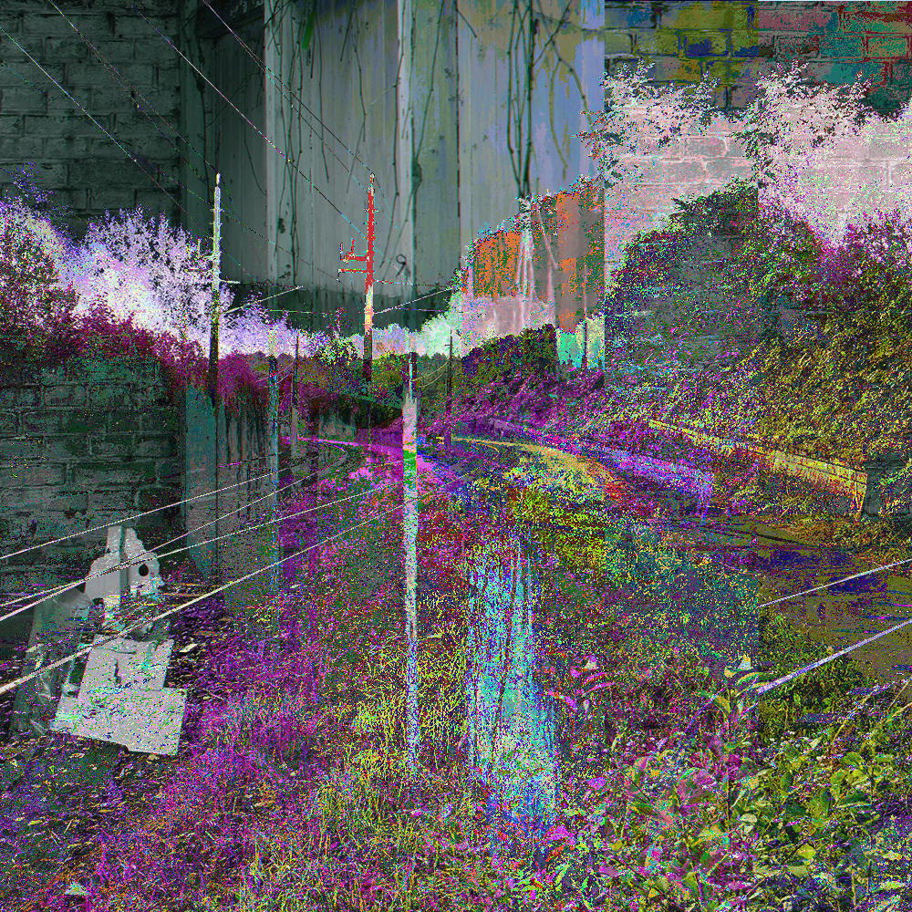

terminal performance
A terminal.
When you start reading the language, when the machine is slightly off. Something strange happens and you realize, this is not for you. Zip files are damaged, images cannot be opened. The one thing you can do is try to decrypt and encrypt, lock yourself away, trying to find a pattern in the things you ask the machine to do exactly as you say.
Inscribed crypt engages in a poetic dialogue with cryptic files via the terminal. The story unfolds while our actor attempts to understand the contents on the computer: This has been part of a live performance, where the terminal log has been uploaded and documented, until the device has been shut down.
